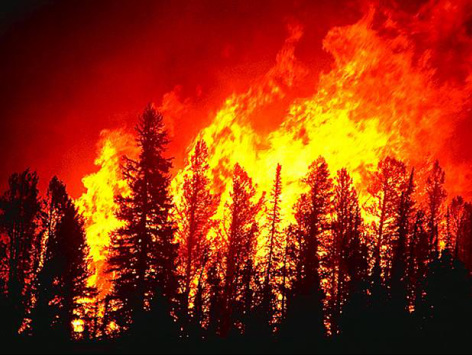

Northwest United States History of Forest Fires

- Click here to read about to 1988 Yellowstone National Park Fire and its biological succession.
About This Map
This map shows all the forest fires for the northwest United States. The years listed here for forest fires are from 1889 to 2003. This also shows all the national parks and forests within the area of all these fires occurred. This map can be primarily used to trace patterns of every known forest fire for over a hundred years. There are years of high rates of forest fires and those of lower rates of fire occurances. For example, the year 1988 was a particularly intense year for forest fires especially in Yellowstone National Park and parts of Idaho. There are several factors that can contribute to these breakouts of forest fires including drought, wind patterns, and human activity. It was long thought that these forest fires were destructive to the environment but after years of research we have concluded that these natural fires are a benefit and necessity to the ecosystem.